[재탕] 나폴레옹의 출세 과정 - 툴롱 (Toulon) 포위전
게시: 2017-12-29T13:30:13+09:00
3줄 요약 :
1) 일단 기본 실력은 키우자 - 아주 탄탄히 키우자
2) 인맥을 만들자 - 나폴레옹 같은 천재조차 인맥 없이는 아무 것도 될 수 없었다
3) 가장 중요한 것은 '출세를 위한 집념과 의지'이다 - 주어진 일만 충실히 하면 충실한 하인이 될 뿐이다
시대가 위인을 만드는가 또는 위인이 시대를 만드는가 하는 것은 영원히 반복되는 떡밥이고, 예전에 '불멸의 이순신'을 연기했던 김명민 본좌는 '시대가 위인을 만드는 것 같다'는 말을 한 적도 있었지요. 제 생각에는 위인될 만한 인물이 시대를 잘 만나야 위인과 시대가 탄생하는 것 같습니다. 아무리 좋은 기회를 만나도 사람 그릇이 그저 그렇다면 말짱 헛것이고 (저 같은 경우는 IMF와 리먼사태를 둘다 겪었습니다만 떼돈을 벌 이 두번의 기회에서 얻은 것이 아무 것도 없었지요), 또 아무리 그릇이 큰사발이라고 해도, 시대를 잘못 만나면 한낱 놈팽이 신세를 못 벗어나는 것 같습니다.
나폴레옹의 경우는 어땠을까요 ? 나폴레옹은 희대의 영웅이 분명한데, 이런 나폴레옹도 시대를 못 만났으면 한낱 포병 장교로 그저그런 중산층의 삶을 살다가 끝났을까요 ? 그럴 가능성이 컸습니다. 나폴레옹이 황제의 자리에 오르기까지는 정말 험난한 여정을 겪어야 했습니다만, 나폴레옹에게 주어졌던 최초의 기회는 어떤 것이었을까요 ? 프랑스 대혁명 ? 물론 그렇지요. 하지만 프랑스 대혁명은 수천만명의 프랑스인들에게 모두 주어졌던 기회입니다. 그나마 나폴레옹은 그렇게 주어진 기회를 묘한 방향에 활용했습니다. 즉, 고향 코르시카를 프랑스의 압제하에서 독립시키겠다는 것이었지요. 그나마 성공하지 못하여, 고향 코르시카에서의 모든 기반을 다 말아먹고, 고향 사람들의 추격을 피해 원수의 나라라고 속으로 미워하던 프랑스로 야반도주해야 했습니다. 간단히 말하면 난세에 출세해보겠다고 깝치다가 패가망신한 것이지요.
나폴레옹이 초라한 포병 중위 신세에서 갑자기 젊은 나이에 장군으로 수직 상승한 계기는, 다들 아시는 바와 같이 1793년 툴롱 포위전이었습니다. 여기에서 혁혁한 공을 세웠기 때문이었지요.
브리태니커 백과사전의 협찬을 받은, 다음 백과 사전에서 툴롱 포위전에 대해 찾아보시지요. (출처 : 다음 백과 사전 - 툴롱 포위전 )
그나마 클릭하기 귀찮아 하시는 분들을 위해 제가 아래에 무단전재했습니다.
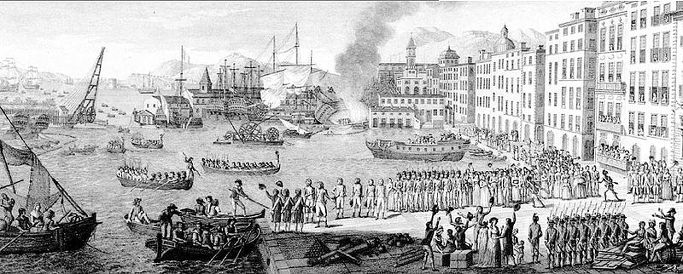
(툴롱 항구의 영길리-서반아 연합 함대)
툴롱 포위전 (프랑스 역사) ----------------------------------------
프랑스 혁명전쟁중 벌어졌던 군사 작전(1793. 8. 28~12. 19).
툴롱 포위전투에서 젊은 포병 장교인 나폴레옹 보나파르트는 툴롱과 부근 요새를 점령하고 있던 영국-스페인 연합 함대를 무찔러 최초의 군사적 명성을 얻었다.
8월 27~28일 프랑스의 왕당파 반혁명주의자들은 프랑스의 주요해군기지인 툴롱과 병기창을 영국 해군 부 제독 후드 경과 스페인의 후안 데 랑가라 제독이 지휘하는 연합 함대에 넘겨주었다. 한편 영국 함대는 프랑스 해군이 보유한 함선의 절반에 이르는 70여 척을 나포했다. 이 해군기지의 전략적 중요성을 알고 있었던 프랑스는 혁명의 위신을 걸고 툴롱을 반환할 것을 요구했다. 양측은 군대를 강화했고 포위전이 시작되었다. 명목상으로는 여러 명의 프랑스 장군이 이 포위전을 지휘했으나 작전의 성공은 그때까지만 해도 무명의 포병 장교였던 나폴레옹 보나파르트의 힘이 컸다. 몇 개월에 걸친 준비 끝에 혁명군은 대대적인 포격 지원을 받으며 툴롱을 지휘하는 연합군의 요새에 맹공격을 가했다. 12월 18일 오후 늦게 보나파르트가 이끄는 포병 중대가 영국 함선을 포격하기 시작하자 후드 경은 즉시 내항에서 함대를 철수시켰다. 영국-스페인 연합군은 그날 밤 병기창에 포격을 가하고 42척의 프랑스 선박을 불태운 뒤 왕당파 프랑스인들을 태울 수 있는 만큼 태우고 툴롱을 떠났다. 12월 19일 도시를 점령한 혁명군은 수백 명의 왕당파들을 체포해 특별재판에 회부한 뒤 총살했다. 나폴레옹 보나파르트는 이 전투에서의 공로로 준장으로 진급했다.
---------------------------------------------------------------------------
자, 어떻습니까 ? 이 백과사전 내용을 보면 왜 나폴레옹이 이 전투에서 출세할 수 있었는지 아시겠습니까 ? 솔직히 저는 잘 모르겠더군요. 당시 프랑스군에는 대포를 쏠 줄 아는 사람이 나폴레옹 한명 뿐이었을까요 ? 글쎄요, 극히 의심스럽습니다. 나폴레옹은 수많은 포병 장교들 중 막내 정도에 해당하는 초짜 포술가에 불과했습니다. 사관학교에서는 실제 대포를 쏴 본 적도 없었고, 발랑스의 포병 연대에 부임하여 1년 정도 근무하면서 배운 것이 전부였습니다. 그나마 그 이후에는 코르시카 독립운동을 하느라 발랑스 포병 연대에는 장기 휴가를 제출한 상태였으므로, 실제 포병질을 했던 경력은 극히 짧은, 불량 장교에 불과했습니다. 그런데 나폴레옹이 프랑스에서 제일 대포를 잘 쏘는 사람이었을까요 ? 전혀 그렇지 않았을 것 같습니다. 그런데 왜 당시 프랑스 국민공회는, 또 저 위의 백과사전에서는 왜 보나파르트의 포병술이 이 포위전 승리에 결정적인 역할을 한 것으로 판단했을까요 ?
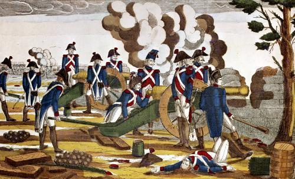
(당시 대포가 그렇게 쏘기 어려운 것이었나요 ? 그냥 대충 쑤셔넣고 대충 보고 쏘는 것 같은데...?)
일단, 툴롱 포위전의 배경에 대해서 보시지요. 당시, 즉 1793년은 이미 프랑스 혁명이 발발한지 4년째 되는 해로서, 혁명이 완숙기에 들어갔어야 할 시기였습니다. 그러나 혁명이라는 것은 원래 아마추어들이 하는 것으로서, 당시 프랑스 혁명 정부에서도 뭐 하나 제대로 돌아가는 것이 없었습니다. 1793년은 아시냐 지폐로 대표되는 극심한 경제적 혼란에 더하여 (재정 적자, 아시냐 지폐, 그리고 나폴레옹 편 참조), 로베스피에르와 단두대가 상징하는 공포정치가 맹위를 떨치던 때였습니다. 이러한 혼란 속에서는 당연히 수구파들이 들고 일어나기 마련이고, 왕당파들의 반란은 마르세이유와 툴롱 등 남부 프랑스 해안지방에서 특히 심했습니다. (남부 프랑스의 이런 반혁명, 친왕당파 정서는 1814년 나폴레옹이 퇴위할 때까지도 이어져서, 엘바섬으로 향하는 나폴레옹은 남부 프랑스를 통과할 때 군중들로부터 모욕과 신체적 협박까지 받아야 했습니다.)
어쨌거나 툴롱은 결국 왕당파 반란군이 장악하게 되었는데, 이 소식은 다른 지방도시의 반란과는 달리 파리 국민공회에 심각한 경보를 울리게 했습니다. 이 툴롱은 프랑스 제1의 군항으로서, 여기에 정박해있던 함대는 모두 70여척으로서, 전체 프랑스 해군의 절반에 달할 정도였기 때문입니다. 이 군항을 상실한다는 것은 프랑스 해군을 상실하는 것과 거의 동일한 의미였으므로, 툴롱의 반란은 파리가 경악할 만한 소식이었지요. 혹시 프랑스 해군은 그저 '영국 해군의 밥' 정도로 여기시는 분들이 있으실지도 모르겠습니다만, 그건 정말 큰 오해입니다. 오늘날 미합중국의 존재 자체가 바로 미국 독립전쟁 때 프랑스 해군이 영국 해군을 패배시킨 덕분일 정도로, 18세기 후반 프랑스 해군은 막강한 존재였습니다. 게다가 혁명 직전까지, 영국 해군은 평화 시기에 맞게 많이 축소되어 있어서, 1789년 영국이 캐나다 서부의 누트카(Nootka) 섬을 두고 스페인과 영토 분쟁을 벌였을 때 제대로 대응을 못할 정도로 영국 해군은 축소되었다가, 겨우 전비를 갖춘 상태였습니다. 이 누트카 사태가 계기가 되어 영국 해군이 전비를 갖추게 된 것이 전화위복이 되어, 영국은 제1차 대불 동맹전쟁 때부터 강력한 해군으로 프랑스를 봉쇄할 수 있었습니다. (이 누트카 사태 이야기는 패트릭 오브라이언의 오브리-머투어린 시리즈 제16편 Wine Dark Sea 편에 잭 오브리의 입을 빌어 상세히 소개됩니다. 한번 읽어보세요.)
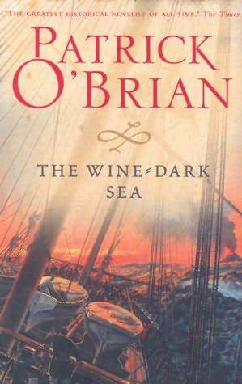
(우리말에는 영어와는 달리 색깔을 표현하는 단어가 아주 많다고 자랑하지만, 저렇게 wine dark 라는 표현을 보면 영어도 문학적 감수성이 부족한 언어라는 생각은 들지 않습니다.)
그 즈음 역시 왕당파가 장악하고 있던 마르세이유가 국민공회군에게 진압당하자, 8월 28일 툴롱의 왕당파는 툴롱 앞바다에서 툴롱 봉쇄작전을 수행 중이던 영국 및 스페인 함대를 항구에 맞아들이고 그 연합 병력 1만3천명이 상륙했습니다. 이 소식에 프랑스 국민공회는 경기를 일으킬 정도의 충격을 받았습니다.
이런 절대절명의 위기에 대응하여, 프랑스 국민공회는 즉각 툴롱 탈환을 위한 병력을 급파합니다. 영국군이 상륙한지 불과 11일 뒤인 9월 8일, 카르토 (Jean François Carteaux) 장군이 이끄는 진압 병력이 툴롱 외곽에 도착할 정도였습니다. (실은 카르토의 병력은 마르세이유 진압에 동원되었던 병력 및 인근에서 추가 모집된 병력들이었습니다.) 이런 급박한 상황에서, 나폴레옹은 과연 무엇을 하고 있었을까요 ?
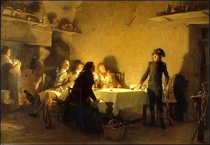
(나폴레옹은 이 '보케르에서의 저녁 식사'를 정말 보케르에서 썼다고 합니다.)
나폴레옹은 포병 사령관이 (당연히) 아니었고, 그 부관도 아니었습니다. 그는 툴롱 포위전 이전에는 보케르(Beaucaire)라는 남부 해안 도시에서 탄약을 공급하는 수송마차를 지휘하는 한직에 있었을 뿐이었습니다. 이때 나폴레옹은 자신의 미래를 결정지을 짧은 글을 한편 썼습니다. 저녁마다 써서, 딱 2일만에 완성한 이 글의 제목은 'Le Souper de Beaucaire' 즉 '보케르에서의 저녁식사' 였습니다. 내용은 왕당파 인물 하나와 공화파 사람 하나가 서로의 체제에 대해 토론을 하다가 결국 공화파가 우수한 체제라고 결론이 나는, 정치적 팜플렛에 가까운 글이었습니다. 나폴레옹은 이 글에서 공화제에 대한 열렬한 지지를 나타냈는데, 이것이 정말 본인의 진심인지 아니면 이런 '충성 고백'스러운 글로 당시 권력층의 눈에 들어보려 했던 것인지는 불분명합니다. 다만 확실한 것은, 당시 권력의 핵심에 있던 '단두대의 제왕' 막시밀리앙 로베스피에르(Maximilien Robespierre)의 동생 '오귀스틴 로베스피에르(Augustin Robespierre)'의 눈에 나폴레옹이 띈 것은 바로 이 글을 통해서라는 것입니다. (또 확실한 것은 황제가 된 이후, 나폴레옹은 경찰력을 동원하여 자기가 예전에 썼던 이 책을 샅샅이 찾아내어 최후의 한부까지도 다 불태워버렸다는 것입니다.) 어쨌든 동생 로베스피에르는 이 글을 읽고 나폴레옹이라는 인물에 대해 알게 되었고, 그 정치적 후원자가 됩니다. 로베스피에르의 도움이 없었다면 나폴레옹은 월급도 제대로 못받는 가난한 장교로서 (저나 여러분 대부분처럼) 당장 먹고 사는 문제에 전전긍긍하다가 생을 마쳤을 가능성이 큽니다.
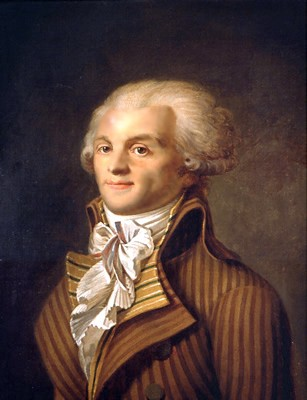
(난 막시밀리앙 로베스피에르야. 동생 오귀스틴은 나처럼 유명하지가 않아서 초상화도 없어.)
이 즈음의 나폴레옹의 신세를 알려주는 일화가 있습니다. 그는 툴롱으로 가는 도중에, 인근 여관 식당에서 주변 손님들을 상대로 식사를 베풀며 자신의 전략을 떠벌였는데, 결국 별 호응을 얻지 못했고 뜨내기 손님들이 '어쨌거나 잘 먹었수다' 하며 떠나간 뒤, 그 밥값을 내지 못할 정도로 찌질한 상태였습니다. 이 60 프랑에 달하는 과중한 식대는 결국 끝내 갚지 않았고, 여관 주인인 바레타(Baretta)는 나폴레옹의 외상 문서를 처음에는 불량채권으로, 나중에는 가보로 간직했다고 합니다.
이런 야사를 남기며 툴롱 포위군에 합류한 가난뱅이 찌질이 포병 장교 나폴레옹은 그저 '맡은 바 임무를 묵묵히, 그러나 충실히 수행해내는' 착실한 장교는 아니었습니다. (여러분 주변에도 이런 사람 있을 것 같은데) 나폴레옹이 제일 먼저 한 일은 군 내부에 자기의 '빽'이 되어줄 만한 연줄이 없나 찾아보는 것이었습니다. 마침 같은 코르시카 출신으로서, 전에도 알고 지내던 살리세티(Antoine Christophe Saliceti)가 카르토 장군의 사령부에 일종의 정치 장교로서 와 있었고, 나폴레옹은 얼른 그쪽에 줄을 댔습니다. 마침 일이 잘 돌아가느라고, 카르토 휘하의 포병 지휘관이었던 동마르탱(Donmartin)이 부상을 당한 상태여서, 그 자리를 '빽이 있는' 나폴레옹이 꿰어차게 되었습니다.
(살리세티, 초창기 나폴레옹의 든든한 빽. 프랑스 역사에서의 그의 역할은 딱 거기까지...)
나폴레옹의 실력이야 충분했습니다. 당시 제대로 된 군사 훈련을 받은 장교들이 크게 부족한 상황이었거든요. 그런 장교들은 대개 왕당파로서, 이미 망명했거나 반란군에 가담했거나 박해를 받고 잠적한 상태였습니다. 때문에 국민공회는 군사적 능력보다는 정치적 충성도를 기준으로 사령관과 장교를 선발했습니다. 일단 사령관인 카르토 장군 자신이 군대와는 전혀 무관하게도, 화가 출신이었습니다. 당시 카르토는 툴롱을 접수한 영국-스페인 함대를 몰아내기 위해 나름대로 머리를 써서, 툴롱 서쪽의 고지대인 올리울(Ollioules) 공략에 열을 올려, 결국 이 고지를 손에 넣은 상태였습니다. 실은 나폴레옹의 전임인 동마르탱도 이 올리울 공략전에서 부상을 입은 것이었지요. 카르토의 생각으로는 이 고지가 툴롱 공략의 핵심 거점이었습니다. 사실 이 생각이 꼭 틀린 것만은 아니었습니다. 이 곳은 마르세이유로 통하는 도로를 제압할 수 있는 고지였고, 특히 (카르토의 생각으로는) 이 고지에 거포를 올려놓고 저 아래 항구의 영국 함대에 포격을 퍼부을 수도 있었습니다.
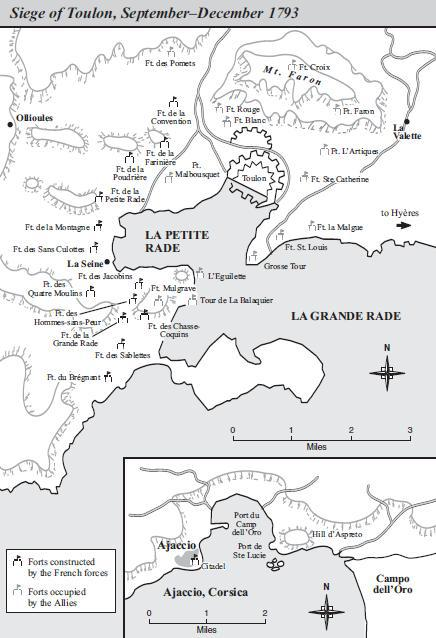
(지도 왼쪽 상단에 Ollioules이라는 지명이 보이시나요 ? K-9 자주포라면 모를까... 저기서 툴롱 항구를 포격하는 것은 좀... 아래 눈금은 1마일 단위입니다.)
여러분은 당시 프랑스군이 가지고 있던 24파운드포의 사정거리가 얼마인지 아시나요 ? 저는 잘 모릅니다. 그런데, 그건 카르토도 마찬가지였나 봅니다. 지도를 보면 올리울과 항구와의 거리는 대략 4마일, 약 6km 정도인데, 이 거리는 확실히 당시 대포의 사정거리를 크게 넘어서는 것이었습니다. 카르토는 새로 부임한 시골뜨기 포병 대위 나폴레옹에게 자신의 업적을 과시하고자 올리울 고지에 설치한 24파운드포들을 보여주었습니다. 그러나 나폴레옹의 직업적인 눈에는 이 모든 것이 기가 막혔지요. 나폴레옹이 한번 시범 사격을 해보시라고 권하여 발포해보니, 포탄은 원래 의도했던 거리의 절반조차도 날지 못했습니다. (결국 당시 거포라고 할 수 있는 24파운드 포의 최대 사정거리는 대략 2km 정도였다는 이야기지요.)
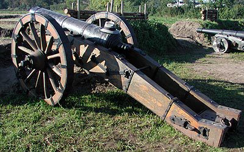
(24 파운드 포입니다. 누군가 그 크기를 보여주려고 자신의 모자를 점화구 위에 올려놓았네요.)
나폴레옹은 그 결과를 보여주며, 카르토의 작전이 얼마나 어처구니없는 것인지, 그리고 그 대신 레귀예뜨 (l’Éguillette) 요새를 점령해야 원하는 대로 연합함대에게 효과적인 포격을 가할 수 있다고 (카르토가 아닌) 정치위원인 살리세티에게 역설했습니다. 이는 카르토가 나폴레옹을 첫눈에 '코르시카 촌뜨기'로 제대로 알아보고 개무시했기 때문이기도 했지만, 나폴레옹이 카르토에게 공적을 넘기고 싶지 않았기 때문이기도 했습니다. 카르토는 루이 15세의 그저그런 초상화 제작에 참여했던 정도의 볼품없는 이류화가에서, 정치적 열정만으로 장군이 된 야망가였거든요. 카르토라면 나폴레옹의 아이디어가 자기 전략인 듯 가로채는 것이 얼마든지 가능했습니다. 그런 카르토를 역으로 개무시하고 직접 '정치위원 동무들'에게 이야기하는 나폴레옹이 카르토의 눈에는 얼마나 얄밉게 보였겠습니까 ? 게다가 카르토 역시 툴롱 항구를 대항구와 소항구로 나누는 반도에 세워진 레귀예뜨 요새의 중요성을 모르는 바는 아니었습니다만, 그 쪽은 지형이 너무 험하고 영국군의 방어가 너무 견고하여 감히 공략할 수 없다고 판단하고 있었습니다.
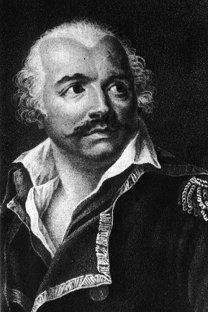
(예술과 군사는 종이 한끝 차이 ? 나폴레옹 출세의 걸림돌 카르토 장군)
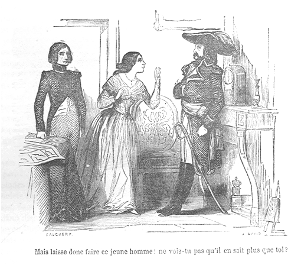
(나폴레옹과 카르토 장군의 언쟁 속에 끼어든 여자는 카르토의 부인입니다. 카르토와 나폴레옹 사이에 전술적 언쟁이 벌어지면 항상 카르토의 부인은 나폴레옹의 편을 들었다고 합니다. 이 그림 속에서, 카르토 부인은 '이 사람 말대로 하세요. 이 젊은이가 당신보다 더 많이 안다는 걸 모르시겠어요 ?' 라고 말하고 있습니다. 어쩌면 나중에 황제가 된 나폴레옹이 카르토에게조차 한자리 챙겨준 것은 그 부인에 대한 고마움에서인지도 모르지요. 다시 한번 입증되는 진리는 '모든 남편은 와이프 말을 잘 들어야 잘 산다' 입니다.)
어쨌거나 얄미운 나폴레옹에게는 자코뱅파의 후원이 있었기에 (덕분에 아직 전과도 없는데 금방 소령으로 진급했습니다), 카르토의 분노와 질투에도 불구하고, 나폴레옹의 작전대로 레귀예뜨 요새를 공격하는 것이 결정되었습니다. 하지만 어쨌거나 사령관은 카르토였기 때문에 병력의 지휘권은 카르토에게 있었습니다. 카르토는 나폴레옹이 요청한 병력 1천명 대신 5백명 만을 지원해주었고, 결국 나폴레옹의 요새 공격은 실패로 끝났습니다.
이 공격 실패는 나폴레옹 뿐만 아니라 프랑스의 툴롱 공략 전체에 큰 좌절을 안겨 주었습니다. 프랑스가 이 레귀예뜨 요새에 눈독을 들이고 있다는 사실을 눈치챈 영국군은 이 곳의 수비를 강화하여 여기에 새로 멀그레이브 요새 (Fort Mulgrave)를 축성하고, 그 방어를 더욱 공고히 하기 위해 3개의 작은 보조 진지 (Saint-Phillipe, Saint-Côme, Saint-Charles)까지 만들었기 때문입니다. 프랑스군은 이렇게 새로 강화된 영국군 진지를 '리틀 지브랄타 (Little Gibralta)'라고 불렀습니다. 괜히 어설프게 건드렸다가 부스럼이 커진 것이지요. 나폴레옹의 작전과 야망은 완전히 물거품이 되는 것처럼 보였습니다.
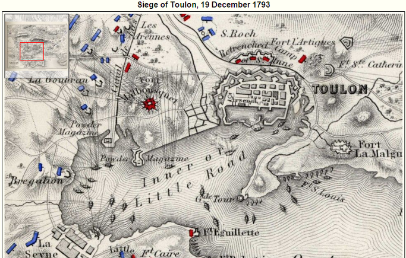
(지도 중앙 아래 쪽에 레귀예뜨 요새 Ft de Eguillette 라는 지명이 보이시나요 ?)
하지만 나폴레옹의 야망은 그런 영국군의 요새 몇채와 카르토라는 멍청이 상관 정도에 꺾이지는 않았습니다. 그는 툴롱 공략전의 최대 방해물은 멀그레이브 요새가 아니라 카르토라고 제대로 파악했습니다. 그는 상명 하복과 보고 체계 등 군인이라면 누구나 중요시해야 하는 것들을 모두 무시하고 다시 국민공회 정치인들(오귀스틴 로베스피에르와 살리세티)에게 편지를 써서, 카르토 제거의 필요성을 역설했습니다. 나폴레옹이 '보케르에서의 저녁 식사'라는 글을 써서 획득한 '자코뱅 연줄' 아이템은 여기서 위력을 발휘합니다. 카르토는 당장 모가지가 날아갔습니다. 실제로 단두대로 갔다는 뜻은 아닙니다, 단, 파리로 소환된 후 책임을 추궁당해 잠깐 투옥되기는 했습니다. 후에 나폴레옹이 황제가 되자, 나폴레옹은 승자의 아량을 베풀어 그를 지방 관리로 임용해줍니다.
그 후임으로 온 도페(Doppet) 장군은 내과의사 출신이었는데, 군사적 감각이 있었던 것인지 또는 정치적 감각이 있었던 것인지, '상관의 모가지도 가볍게 날려버리는' 나폴레옹의 의견대로 멀그레이브 요새 공격에 나섭니다. 다만, 도페 장군은 외과 의사(surgeon) 출신이 아니라 내과 의사(physician) 출신이라서 그랬는지, 공격을 지휘하다가 영국군의 포화에 부하 병사가 두동강이 나는, 지극히 평범한 장면을 목격하고는 '이건 미친 짓이야, 난 여기서 나가겠어'라며 지휘권을 스스로 반납합니다. 어쩌면 그는 현장에 부임하고 나서야 나폴레옹이 어떤 괴물인지 파악하고 발을 빼기로 했는지도 모르지요.
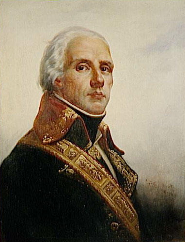
(뒤고미에 장군. 나폴레옹에게 많은 은혜를 베풀었으나, 불행히도 1794년 스페인과의 전쟁에서 전사하는 바람에 나폴레옹 출세 이후 덕을 보지 못했습니다. 대신 나폴레옹은 그 아들에게 10만 프랑의 보상금을 주었다고 합니다.)
그다지 길지도 않은 (약 3개월) 툴롱 포위전에 3번째로 부임한 새 지휘관은 뒤고미에(Jacques François Dugommier) 장군이었습니다. 이 사람은 오자마자 나폴레옹의 군사적 천채 (또는 그의 등 뒤에 있는 오귀스틴 로베시피에르)를 한눈에 알아보고는 (대체 뭘 보고 ?) 그에게 포병대 전체 지휘권을 일임합니다. 나폴레옹은 아직 카르토가 지휘관일 때부터 포병대 전력 강화에 전력을 다했습니다. 나폴레옹은 이 작전의 관건이 툴롱시가 아닌 연합 함대라고 제대로 파악하고 있었습니다. 즉, 툴롱을 에워싼 요새들을 하나하나 피비린내나는 백병전을 통해 함락시키는 것은 의미가 없고, 무엇보다 툴롱 항구에 정박해있는 영국-스페인 연합 함대를 쫓아내기만 하면 툴롱은 저절로 무너질 것이라고 (정확하게) 판단했던 것입니다. 항구를 점령하지도 않고 적의 함대를 항구에서 몰아내기 위해서는 무엇보다 강력한 포병 화력이 필요했고, 특히 멀그레이브 요새가 축성된 이래로는 그 제압을 위해서라도 강력한 포병 전력이 꼭 필요했습니다. 나폴레옹은 자신에게 주어진 몇 문 되지 않는 대포들에 만족하지 않고, 툴롱 인근 지역의 병기고를 샅샅이 뒤져 대포 및 탄약, 그리고 전직 포병 장교들을 징발/징집했습니다. 그 결과, 10월달에 이미 나폴레옹 수중에는 무려 300문의 포병 전력이 갖추어지게 되었습니다.
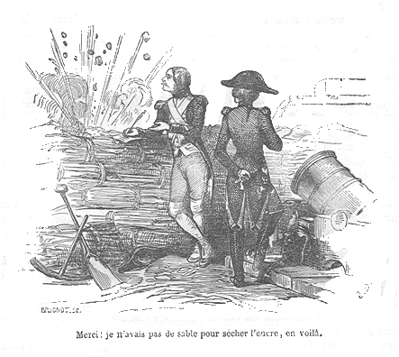
(이 전투에서 나폴레옹은 당시 하사관이었던 '폭풍우' 쥐노를 처음 만납니다. 이 그림은 쥐노의 유명한 일화, 즉 '덕분에 서류에 모래를 뿌리지 않아도 되겠네요'라는 이야기를 묘사하고 있습니다. 당시 필기 습관은 잉크가 번지지 않도록 필기를 한 뒤에는 종이를 접기 전에 모래를 뿌려 마르지 않은 잉크를 흡수하는 것이었습니다.)
이런 막강한 화력을 이용하여, 나폴레옹은 포병 전문가답게 단계적인 포병 진지를 구축하여 '리틀 지브랄타'의 영국군을 압박해들어갔습니다. 11월 20일에는 '리틀 지브랄타' 바로 서쪽에 '자코뱅(Jacobins)'이라는 이름의 포병 진지를, 28일에는 그 인근에 '두려움을 모르는 사람들(Hommes-sans-peur)'라는 진지를, 그리고 마침내 12월 14일에는 '악동 축출(Chasse Coquins)'이라는 진지를 구축해들어갔습니다. 마치 스타크래프트에서 테란이 벙커를 지어가며 조금씩 압박해들어가는 것과 똑같은 전법이었습니다. 테란이 프로토스를 그런 식으로 압박하면 프로토스에서는 보통 질럿들이 쌍칼을 들고 뛰어나오지요. 영국군과 스페인군도 마찬가지로 돌격해 나왔습니다. 이 습격으로 포대 하나를 빼앗기기도 했지만 뒤고미에 장군과 나폴레옹의 지휘한 반격으로 오히려 출격했던 영국군의 오하라(O'Hara) 장군을 사로잡고 영국군과 스페인군을 격퇴해냈습니다. 마침내 12월 16일, 리틀 지브랄타에 대한 총공격이 감행되었고, 이 공격에서 나폴레옹은 영국군 하사관의 총검에 넓적다리를 찔리는 생애 최초의 부상을 당했습니다. 이렇게 멀그레이브 요새를 포함한 리틀 지브랄타가 함락되어 마르몽(Marmont, 나중에 나폴레옹의 휘하 원수가 되는 마르몽 맞습니다)이 거기에 프랑스군의 대포를 설치하자, 영국군은 나폴레옹 최초의 타겟이었던 레귀예뜨 요새를 저항없이 포기했습니다.
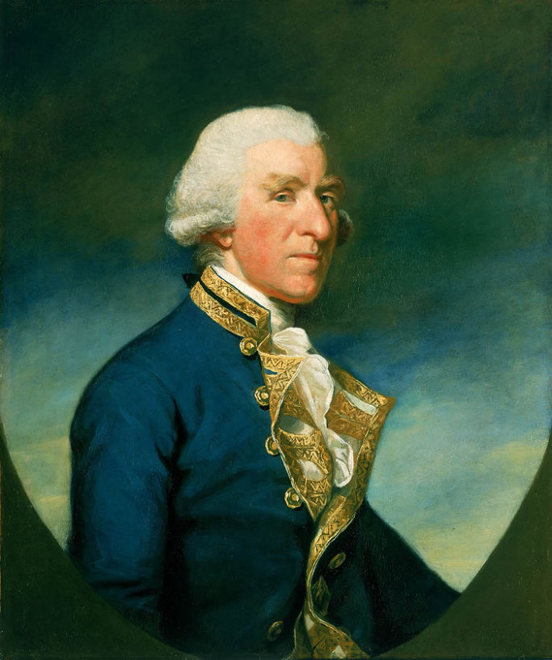
(당시 툴롱을 손에 넣었던 영국 지중해 함대 사령관 새뮤얼 후드 제독. 제2차 세계대전에서 비스마르크에게 격침된 순양전함 HMS Hood는 이 분 이름을 딴 것이 맞습니다.)
나폴레옹의 목표가 무려 3개월이나 우회하여 완료되는 순간이었습니다. 항구에 직접 포격이 가능한 위치에 프랑스군이 진출하자, 영국 지중해 함대 사령관인 후드(Samuel Hood)는 즉각적인 함대 철수를 결정합니다. 연합 함대가 철수한다는 소식이 들리자, 철통같은 툴롱의 방어는 한순간에 무너져 내렸습니다. 그 동안 시내를 장악하고 있던 영국군과 스페인군은 물론이고, 왕당파들도 모두 함대에 몸을 싣고 빠져나가려고 아우성을 쳤던 것입니다. (한국 전쟁 때의 흥남 철수 생각하시면 되겠습니다.) 연합함대는 프랑스 왕당파들 및 그 동조자들도 태울 수 있는 최대한의 인원을 태우려 노력했지만, 결국 많은 수의 왕당파들은 툴롱을 빠져나가지 못하고 뒤이어 입성한 프랑스 국민공회 군에게 처절한 보복을 당하게 됩니다. 바라스(Paul François, 나중에 나폴레옹의 후견인이 되었던 인물이지요)와 프레롱(Louis-Marie Stanislas Fréron)이 지휘한 이 '왕당파 학살' 사건에서, 제대로 된 재판도 없이 툴롱시 연병장에서 무려 1천여명의 왕당파 및 그 동조자들이 총살되거나 총검에 찔려 살해되었습니다.
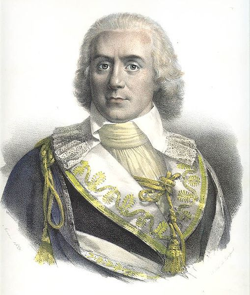
(툴롱에서의 학살극을 주도한 바라스. 나폴레옹의 황후 조세핀과 내연의 관계였다가, 싫증이 나자 나폴레옹에게 조세핀을 넘긴 것으로도 유명합니다.)
이 툴롱 철수는 연합군이 철수하며 수행한 파괴 작전 때문에 더욱 흥남 철수와 비슷했습니다. 영국군과 스페인군은 항구에 정박해있던 70여척의 프랑스 군함 중 상태가 좋은 것 15척을 나포해 갔고, 나머지에는 모두 불을 질러 파괴했습니다. 이와 함께, 프랑스 해군 병기창도 불을 질러 전소시켰지요. 이 날의 피해로 인해 나폴레옹 전쟁 내내 프랑스 해군은 영국 해군에게 기를 펴지 못하게 되었습니다.
하지만 이 포위전으로 인해, 봉급도 제대로 받지 못해 밥값도 못내던 중위 나부랭이였던 나폴레옹은 단번에 준장으로 승진하는 파격적인 출세를 이루어냅니다. 불과 3개월 동안의 일이었습니다. 읽어보시니 어떠신가요 ? 나폴레옹이 어떻게 해서 기회를 잡고 어떻게 출세를 했는지 이해가 가시나요 ? 제가 보는 관점은 이렇습니다. 나폴레옹이 능력있는 포병 지휘관이라는 것은 분명합니다. 그러나 그것이 나폴레옹 출세의 직접적인 원인은 아니었습니다.
나폴레옹의 말대로 레귀예뜨 요새를 점령하자마자 툴롱은 스스로 무너져 내렸습니다. 그것이 나폴레옹의 공로로 흔히 알려져 있습니다. 그러나 나폴레옹 외에는 누구도 그 사실을 인식하지 못했을까요 ? 사실 지금 여러분이 지도만 보더라도 '여기를 점령해야겠네'라고 대번에 파악하실 수 있을 것입니다. 심지어는 무능한 카르토조차도 '누가 그걸 몰라서 공격 안하나 ? 거기가 얼마나 험한 곳인데 거기를 쳐들어가 ? 부오나파르떼라는 친구는 지리를 볼 줄 모르는군'이라고 빈정거릴 정도였으니까요.
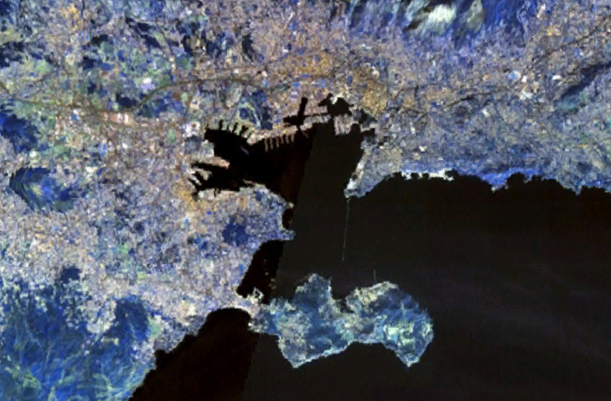
(현대의 툴롱 항공 사진입니다. 누가 딱 봐도 어디에 대포를 설치해야 한다는 거 보이지 않나요 ?)
하지만 나폴레옹은 일단 목표를 정하면 어떻게든 이루려고 몸부림을 쳤습니다. 레귀예뜨 요새를 지키는 영국군이 너무 막강하다 ? 그렇다면 더욱 막강한 화력으로 영국군을 제압하기 위해, 당장 자기에게 주어진 대포로 만족하지 않고 인근 병기창을 샅샅이 뒤졌습니다. 포병 전문가가 부족하다 ? 은퇴한 기존 포병 장교들을 협박하여 툴롱 포위군에 합류하도록 했습니다. (당시에는 은퇴 장교들을 강제로 징집한다는 것은 상상할 수 없는 일이었습니다.)
나폴레옹의 이런 노력 중 가장 놀라운, 그리고 가장 결정적인 것은 바로 카르토를 제거했다는 것입니다. 그것도 (보통 치사하다고 쓰지 않는 방법인) 자신의 정치적 '빽'을 통한 고자질을 통해 제거했지요. 이건 분명히 치사한 행위입니다. 그리고 그렇게 정치적 '빽'을 만들기 위해 '보케르에서의 저녁 식사'라는, 다분히 의도적인 낚시성 '정치 팜플렛'도 작성했었지요. 나폴레옹이 참다운 군인이었으면 이런 '정치군인'적인 횡보를 걸었을까요 ? 나폴레옹이 참다운 군인이었다면 그냥 가난한 포병 장교로 생을 마쳤겠지요. 하지만 나폴레옹은 참다운 군인이라기보다는 난세의 영웅이었지요. 그런 난세에 정치질을 하지 않는다는 것은, '난 출세할 의지가 없다, 그저 난 시키는 일만 하겠다'라고 선언하는 것과 마찬가지였습니다. 결국 나폴레옹의 출세 원인은 역시 정치적 '빽' 덕분이었을까요 ?
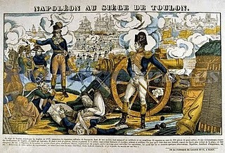
(나폴레옹이 이렇게 시키는 대로 대포만 쏘고 있었다면 결코 출세할 수 없었을 겁니다.)
저는 나폴레옹의 출세 원인은 성공과 출세를 위한 불굴의 의지라고 생각합니다. 그것이 영국군의 요새이건, 무능한 상관이건, 대포의 부족이건 상관하지 않고 모든 난관을 돌파하게 해준 원동력이라고 생각합니다. 정치적 '빽'은 누구나 만들 수 있습니다. 다만 '난 그렇게까지 살고 싶지는 않다'라든가 '나중에 어찌 될지도 모르는데 위험하다'라면서 안 만들 뿐이지요. 정치적 '빽'을 만들다가 정권이 바뀌면 잡혀가지 않겠냐고요 ? 예 그럴 수 있습니다. 실제로 나폴레옹도 테미르도르(Thermidor) 반동 때 로베스피에르 일당으로 찍혀 체포되었고, 모든 것을 잃고 나락으로 떨어졌지요. 하지만 그렇게라도 이름을 날리지 않았다면, 방데미에르 사건 때 나폴레옹의 이름이 정치 위원들 머리 속에 떠오르지도 않았겠지요.
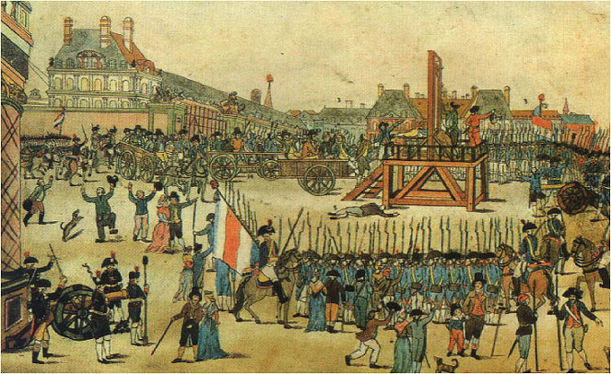
(나폴레옹의 든든한 빽, 로베스피에르의 처형. 모자를 벗어들고 춤을 추는 시민들의 모습이 인상적이군요.)